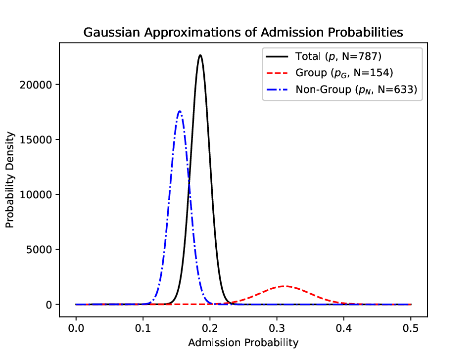

Counting Statistics and Hypothesis Testing
Binomial, Poisson and Gaussian statistics in two short programs. 이항, 푸아송, 가우시안 통계를 다룬 두 개의 짧은 프로그램.
Overview개요
PHYS 129L (scientific computing), Fall 2025. One program simulates a photon-counting experiment 1000 times and histograms the counts. The other works through a hypothesis test: the exact binomial probability of an outcome, the Gaussian approximation to it, and how far apart the two are in the tail.
Visual Analysis시각화 분석

Comparison of probability densities for different population subgroups, illustrating significant statistical deviations (anomalies) detected via Gaussian approximation.
Source Code소스 코드
1. Hypothesis Testing (p3_hw9.py)
#!/usr/bin/env python3
import numpy as np
import matplotlib.pyplot as plt
from scipy import stats, special
N_total = 787
N_admit = 146
#Part a
p = N_admit / N_total
sigma_A = np.sqrt(N_total * p * (1 - p))
print(f"a. Standard deviation sigma_A: {sigma_A:.4f}")
#Part b
sigma_p =sigma_A / N_total
print(f"b. Uncertainty in p: {sigma_p:.4f}")
#Part c
N_sub = 154
k_cut = 48
prob_exact = np.sum(stats.binom.pmf(np.arange(k_cut, N_sub + 1), N_sub, p))
print(f"c. Exact probability (k >= 48): {prob_exact:.4e}")
#Part d
mu_sub = N_sub*p
sigma_sub = np.sqrt(N_sub*p*(1-p))
z = (k_cut-mu_sub)/(sigma_sub)
prob_gauss = 0.5*special.erfc(z / np.sqrt(2))
factor = prob_exact/prob_gauss
print(f"d. Gaussian approximation: {prob_gauss:.4e}")
print(f"Factor by Gaussian is small: {factor:.2f}")
#Part e
N_G = 154
N_AG = 48
p_G = N_AG / N_G
sigma_pG = np.sqrt(p_G * (1 - p_G) / N_G)
print(f"e. p_G: {p_G:.4f}, Uncertainty: {sigma_pG:.4f}")
#Part f
N_rem = N_total-N_G
N_Arem = N_admit-N_AG
p_N = N_Arem/N_rem
sigma_pN = np.sqrt(p_N*(1-p_N) / N_rem)
print(f"f. p_N:{p_N:.4f},Uncertainty: {sigma_pN:.4f}")
#Part g
x = np.linspace(0, 0.5, 1000)
def get_y(x, mean, sigma, N):
return (N / (sigma*np.sqrt(2* np.pi)))*np.exp(-0.5 * ((x - mean) / sigma)**2)
plt.plot(x, get_y(x, p, sigma_p, N_total), color='black', linestyle='solid', label=f'Total ($p$, N={N_total})')
plt.plot(x, get_y(x, p_G, sigma_pG, N_G), color='red', linestyle='dashed', label=f'Group ($p_G$, N={N_G})')
plt.plot(x, get_y(x, p_N, sigma_pN, N_rem), color='blue', linestyle='dashdot', label=f'Non-Group ($p_N$, N={N_rem})')
plt.xlabel('Admission Probability')
plt.ylabel('Probability Density')
plt.title('Gaussian Approximations of Admission Probabilities')
plt.legend()
plt.savefig('p3_hw9.eps')2. Photon Counting Simulation (p2_hw9.py)
#!/usr/bin/env python3
import numpy as np
import matplotlib.pyplot as plt
from scipy.stats import poisson
# Part a
def simulate_photon_count():
return np.random.binomial(1000, 0.002)
# Part b
counts = [simulate_photon_count() for _ in range(1000)]
# Part c
mu = 1000 * 0.002
x = np.arange(0, np.max(counts) + 3)
y_poisson = 1000 * poisson.pmf(x, mu)
plt.figure()
plt.hist(counts, bins=np.arange(x.max() + 1) - 0.5, rwidth=0.8, label='Simulation')
plt.plot(x, y_poisson, color='red', marker='o', label=f'Poisson ($\mu={mu}$)')
plt.title('Photon Counting Simulation (1000 Trials)')
plt.xlabel('Number of Photons Detected')
plt.ylabel('Frequency')
plt.legend()
plt.savefig('p2_hw9.eps')